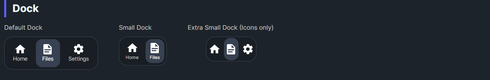

DaisyDock arranges items in a pill-shaped bar, similar to a macOS dock. It supports 5 sizes via the standard DaisySize enum, responds to global size changes via FlowerySizeManager, and raises an ItemSelected event when an item is clicked. Commonly used for app bars or compact nav strips.
| Member | Description |
|---|---|
Size (DaisySize: ExtraSmall, Small, Medium, Large, ExtraLarge) |
Adjusts dock item size and spacing. Responds to global size changes via FlowerySizeManager. |
AutoSelect (bool, default True) |
When true, clicking an item highlights it with the Primary color and deselects siblings. |
SelectedIndex (int, default -1) |
Gets or sets the index of the currently selected item. |
ItemSelected event |
Raised with DockItemSelectedEventArgs containing the clicked UIElement and its index. |
<!-- Default dock with DaisyIconText for proper scaling -->
<daisy:DaisyDock Size="Medium" AutoSelect="True" ItemSelected="Dock_ItemSelected">
<StackPanel Orientation="Horizontal">
<daisy:DaisyIconText IconData="{StaticResource DaisyIconHome}" />
<daisy:DaisyIconText IconData="{StaticResource DaisyIconUser}" />
<daisy:DaisyIconText IconData="{StaticResource DaisyIconSettings}" />
</StackPanel>
</daisy:DaisyDock>
<!-- Small dock -->
<daisy:DaisyDock Size="Small">
<StackPanel Orientation="Horizontal">
<daisy:DaisyIconText IconData="{StaticResource DaisyIconHome}" />
<daisy:DaisyIconText IconData="{StaticResource DaisyIconSettings}" />
</StackPanel>
</daisy:DaisyDock>
<!-- Manual selection with SelectedIndex -->
<daisy:DaisyDock AutoSelect="False" SelectedIndex="{Binding CurrentTab}">
<StackPanel Orientation="Horizontal">
<daisy:DaisyIconText IconSymbol="Home" />
<daisy:DaisyIconText IconSymbol="Document" />
<daisy:DaisyIconText IconSymbol="Setting" />
</StackPanel>
</daisy:DaisyDock>DaisyIconText for dock items. It uses Viewbox internally which ensures icons scale correctly when the dock size changes.FlowerySizeManager.CurrentSize changes automatically, so icons will scale with global size.ItemSelected event or bind SelectedIndex to route clicks and update navigation state.AutoSelect="False" and manage SelectedIndex yourself.